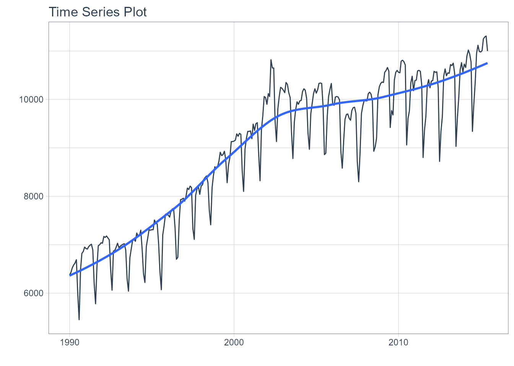
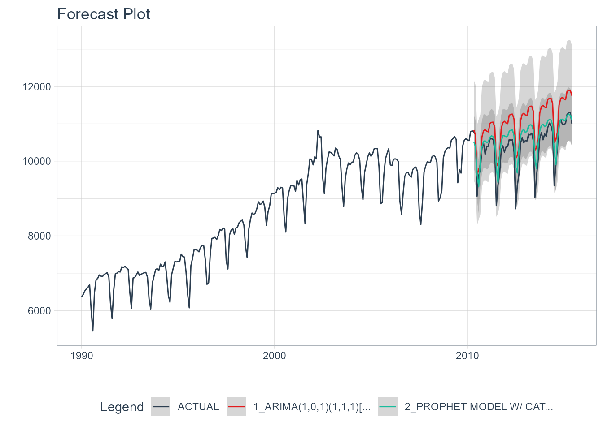
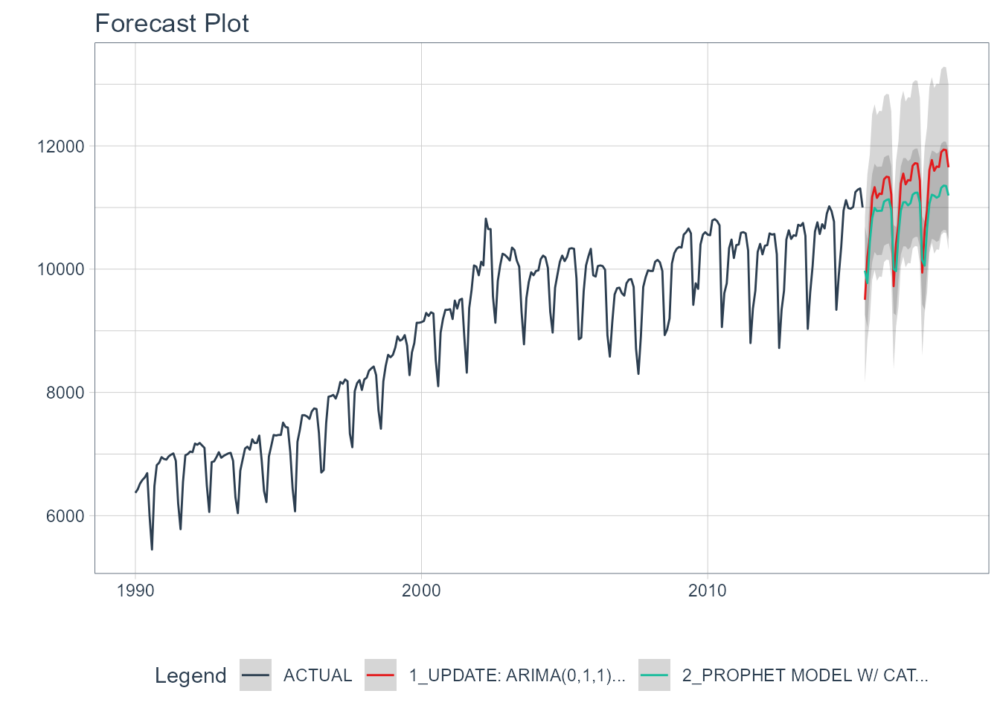

In this short tutorial, we are going to see how to use boostime to apply two models: an arima + catboost and a prophet + lightGBM.
First, we load the libraries that we are going to use during this tutorial.
library(tidymodels)
library(boostime)
library(modeltime)
library(tidyverse)
library(timetk)
library(lubridate)
# This toggles plots from plotly (interactive) to ggplot (static)
interactive <- FALSENext, we visualize the data that we are going to use once filtered:
m750 <- m4_monthly %>% filter(id == "M750")
m750 %>%
plot_time_series(date, value, .interactive = interactive)
Let’s split the data into training and test sets using initial_time_split() function:
splits <- initial_time_split(m750, prop = 0.8)Model Generation
Auto Arima + Catboost
In the first model, we will use an Arima model whose orders will be selected automatically through KPSS unit root tests. Subsequently, the residuals of this first model will be passed to a Catboost model. Finally, the output of both models is summed.
model_arima_catboost <- boost_arima() %>%
set_engine("auto_arima_catboost", verbose = 0) %>%
fit(value ~ date + month(date), data = training(splits))
model_arima_catboost
#> parsnip model object
#>
#> Fit time: 26.1s
#> ARIMA(1,0,1)(1,1,1)[12] with drift w/ Catboost Errors
#> ---
#> Model 1: Auto ARIMA
#> Series: outcome
#> ARIMA(1,0,1)(1,1,1)[12] with drift
#>
#> Coefficients:
#> ar1 ma1 sar1 sma1 drift
#> 0.9600 -0.3275 0.195 -0.7330 17.4466
#> s.e. 0.0203 0.0706 0.121 0.1025 4.8051
#>
#> sigma^2 estimated as 23896: log likelihood=-1499.59
#> AIC=3011.18 AICc=3011.56 BIC=3031.87
#>
#> ---
#> Model 2: Catboost Errors
#>
#> CatBoost model (1000 trees)
#> Loss function: RMSE
#> Fit to 1 featuresProphet + Catboost
The second model will use Prophet followed by Catboost to model the residuals:
model_prophet_catboost <- boost_prophet() %>%
set_engine("prophet_catboost", verbose = 0) %>%
fit(value ~ date + month(date), data = training(splits))Modeltime Integration
Here’s the general process and where the functions fit.

The Modeltime Workflow
So we will continue from step three.
Step 3 - Add fitted models to a Model Table.
The next step is to add each of the models to a Modeltime Table using modeltime_table(). This step does some basic checking to make sure each of the models are fitted and that organizes into a scalable structure called a “Modeltime Table” that is used as part of our forecasting workflow.
We have 2 models to add.
models_tbl <- modeltime_table(
model_arima_catboost,
model_prophet_catboost
)
models_tbl
#> # Modeltime Table
#> # A tibble: 2 x 3
#> .model_id .model .model_desc
#> <int> <list> <chr>
#> 1 1 <fit[+]> ARIMA(1,0,1)(1,1,1)[12] WITH DRIFT W/ CATBOOST ERRORS
#> 2 2 <fit[+]> PROPHET MODEL W/ CATBOOST ERROR SPECIFICATIONStep 4 - Calibrate the model to a testing set.
Calibrating adds a new column, .calibration_data, with the test predictions and residuals inside. A few notes on Calibration:
- Calibration is how confidence intervals and accuracy metrics are determined
- Calibration Data is simply forecasting predictions and residuals that are calculated from out-of-sample data.
- After calibrating, the calibration data follows the data through the forecasting workflow.
calibration_tbl <- models_tbl %>%
modeltime_calibrate(new_data = testing(splits))
calibration_tbl
#> # Modeltime Table
#> # A tibble: 2 x 5
#> .model_id .model .model_desc .type .calibration_da~
#> <int> <list> <chr> <chr> <list>
#> 1 1 <fit[+]> ARIMA(1,0,1)(1,1,1)[12] WITH DRIFT ~ Test <tibble [62 x 4~
#> 2 2 <fit[+]> PROPHET MODEL W/ CATBOOST ERROR SPE~ Test <tibble [62 x 4~Step 5 - Testing Set Forecast & Accuracy Evaluation
There are 2 critical parts to an evaluation.
- Visualizing the Forecast vs Test Data Set
- Evaluating the Test (Out of Sample) Accuracy
5A - Visualizing the Forecast Test
Visualizing the Test Error is easy to do using the interactive plotly visualization (just toggle the visibility of the models using the Legend).
calibration_tbl %>%
modeltime_forecast(
new_data = testing(splits),
actual_data = m750
) %>%
plot_modeltime_forecast(
.legend_max_width = 25, # For mobile screens
.interactive = interactive
)
5B - Accuracy Metrics
We can use modeltime_accuracy() to collect common accuracy metrics. The default reports the following metrics using yardstick functions:
-
MAE - Mean absolute error,
mae() -
MAPE - Mean absolute percentage error,
mape() -
MASE - Mean absolute scaled error,
mase() -
SMAPE - Symmetric mean absolute percentage error,
smape() -
RMSE - Root mean squared error,
rmse() -
RSQ - R-squared,
rsq()
These of course can be customized following the rules for creating new yardstick metrics, but the defaults are very useful. Refer to default_forecast_accuracy_metrics() to learn more.
To make table-creation a bit easier, I’ve included table_modeltime_accuracy() for outputing results in either interactive (reactable) or static (gt) tables.
calibration_tbl %>%
modeltime_accuracy() %>%
table_modeltime_accuracy(
.interactive = interactive
)| Accuracy Table | ||||||||
|---|---|---|---|---|---|---|---|---|
| .model_id | .model_desc | .type | mae | mape | mase | smape | rmse | rsq |
| 1 | ARIMA(1,0,1)(1,1,1)[12] WITH DRIFT W/ CATBOOST ERRORS | Test | 640.45 | 6.24 | 1.91 | 6.02 | 683.07 | 0.84 |
| 2 | PROPHET MODEL W/ CATBOOST ERROR SPECIFICATION | Test | 271.50 | 2.74 | 0.81 | 2.67 | 364.09 | 0.81 |
Step 6 - Refit to Full Dataset & Forecast Forward
The final step is to refit the models to the full dataset using modeltime_refit() and forecast them forward.
refit_tbl <- calibration_tbl %>%
modeltime_refit(data = m750)
refit_tbl %>%
modeltime_forecast(h = "3 years", actual_data = m750) %>%
plot_modeltime_forecast(
.legend_max_width = 25, # For mobile screens
.interactive = interactive
)